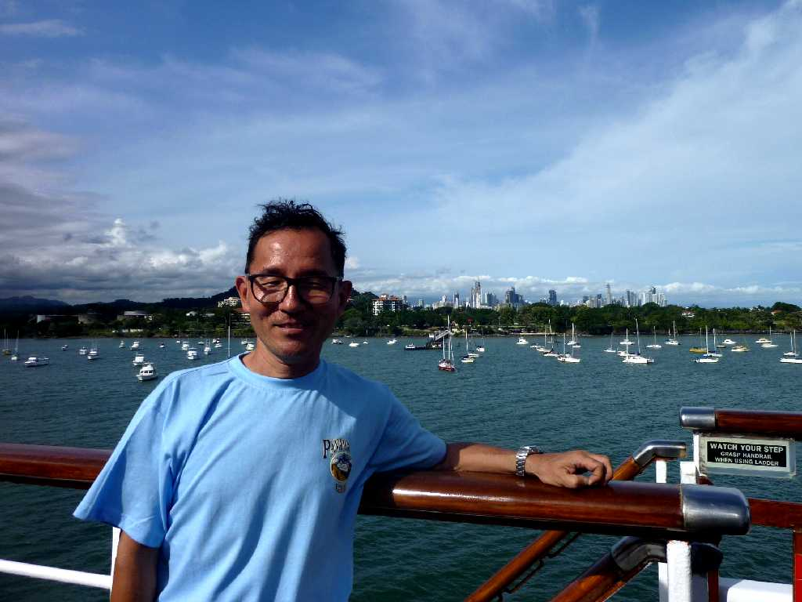
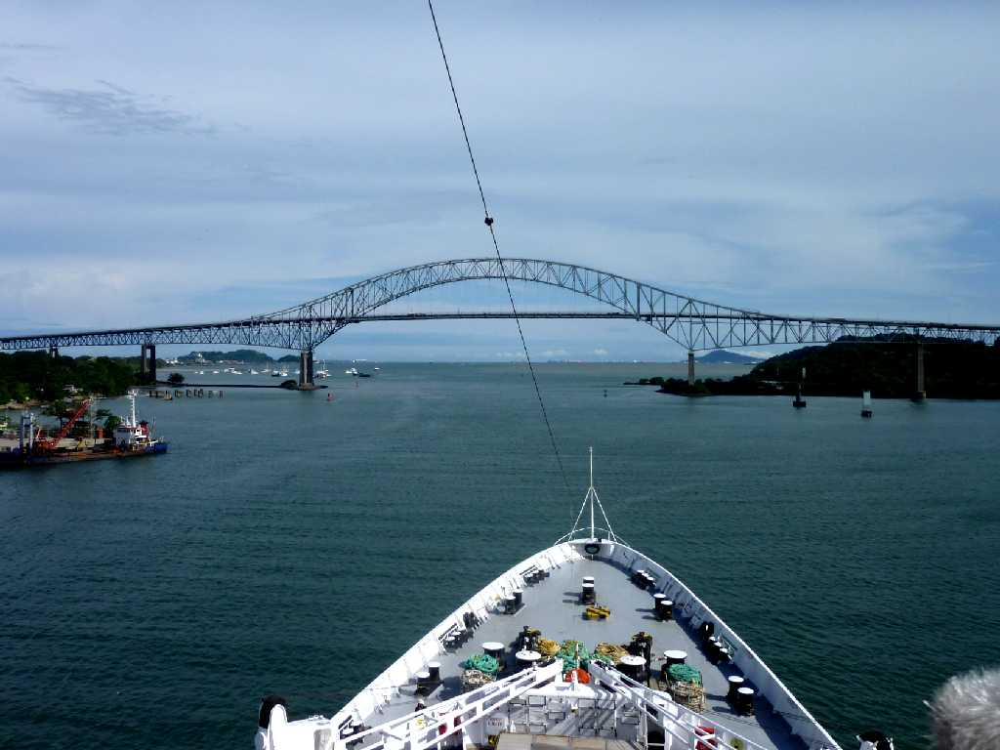
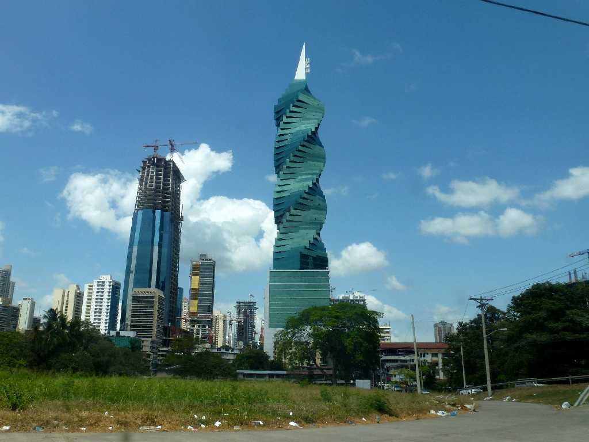
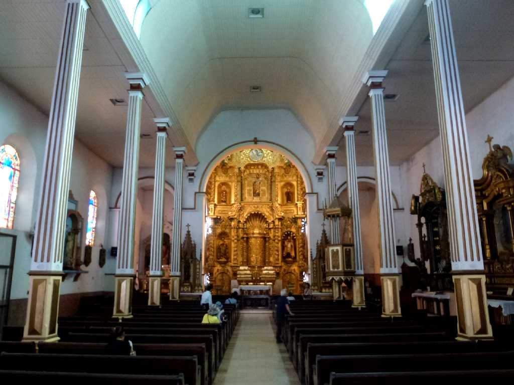
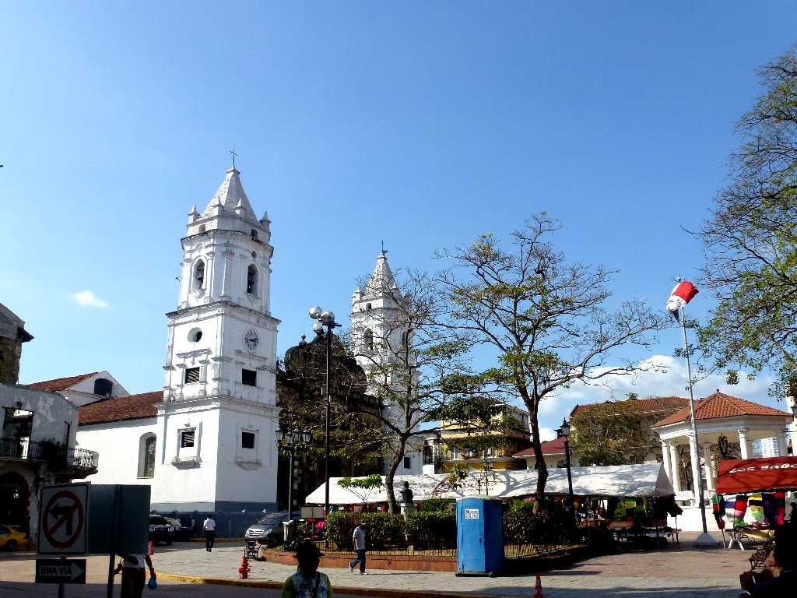
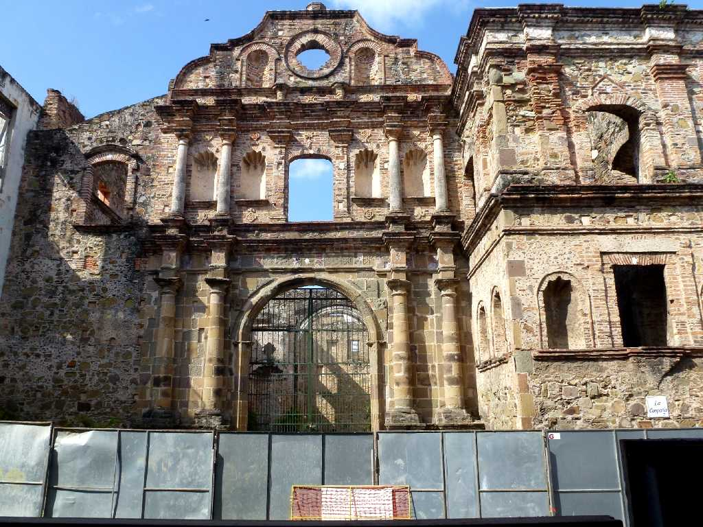
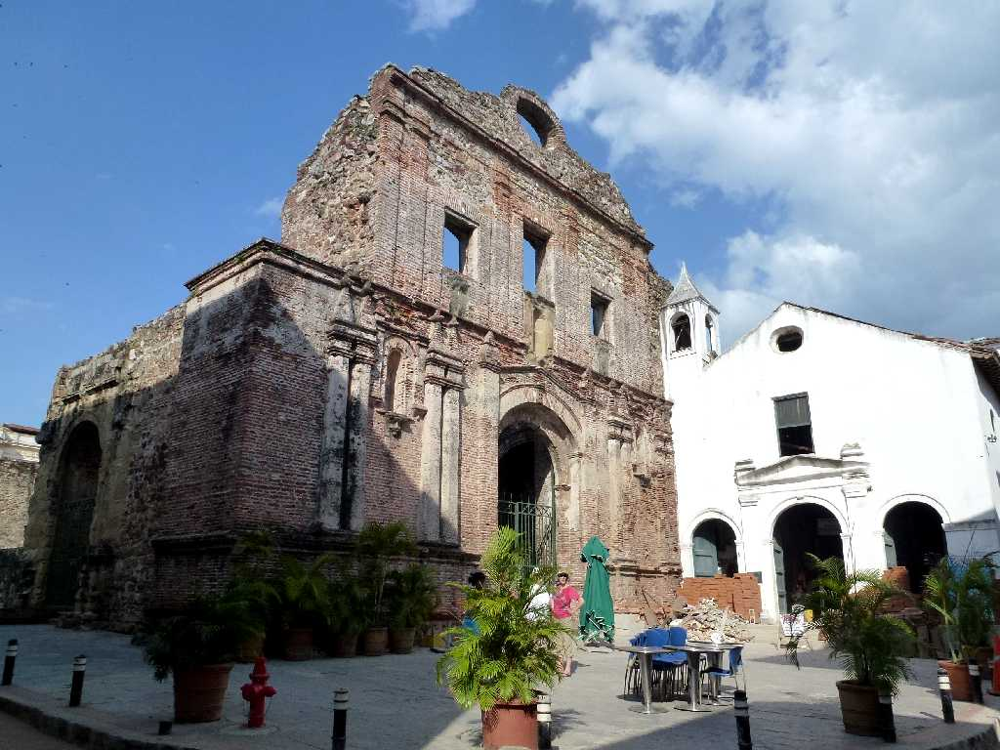
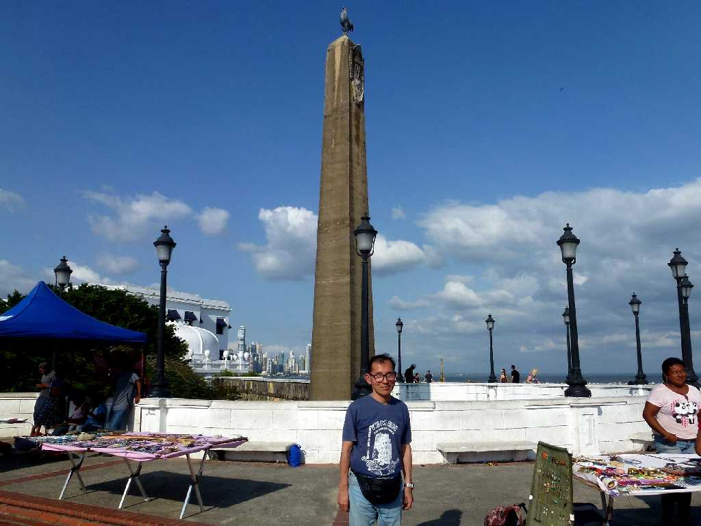

September 26 2010 on SS Oceanic Panama City
パナマの首都パナマシティーを望む

SS Oceanic The Bridge of American Balboa
アメリカ橋を潜ると太平洋に戻る

F&F Tower Panama City
８０日間世界一周クルーズ以来３年ぶりの再訪問 ２０１１年に完成した高さ２３６ｍ５２階建てのF＆Fタワービル

Church of Saint Joseph

Metropolitan Cathedral

Iglesia de la Compania de Jesus

Convento de Santo Domingo

February 8 2013 Conjunto Monumental de Las Bóvedas
１７世紀にスペインにより創られた要塞でありパナマ運河建設では倉庫として貢献したボベダス記念碑